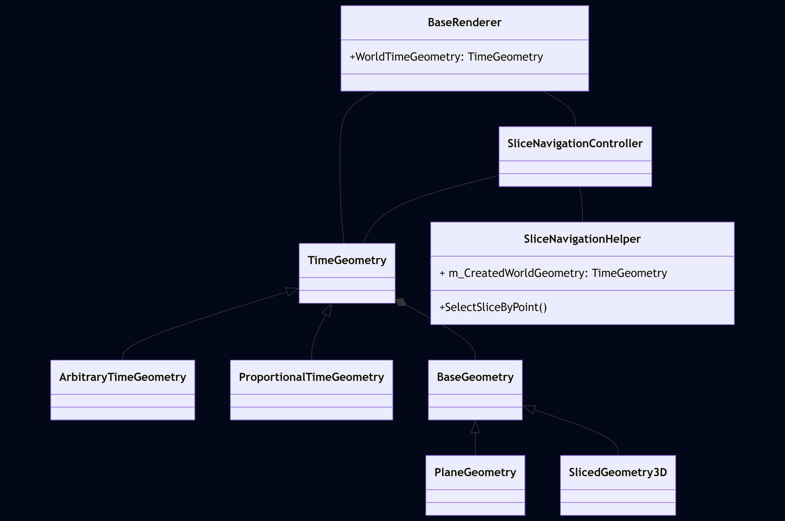
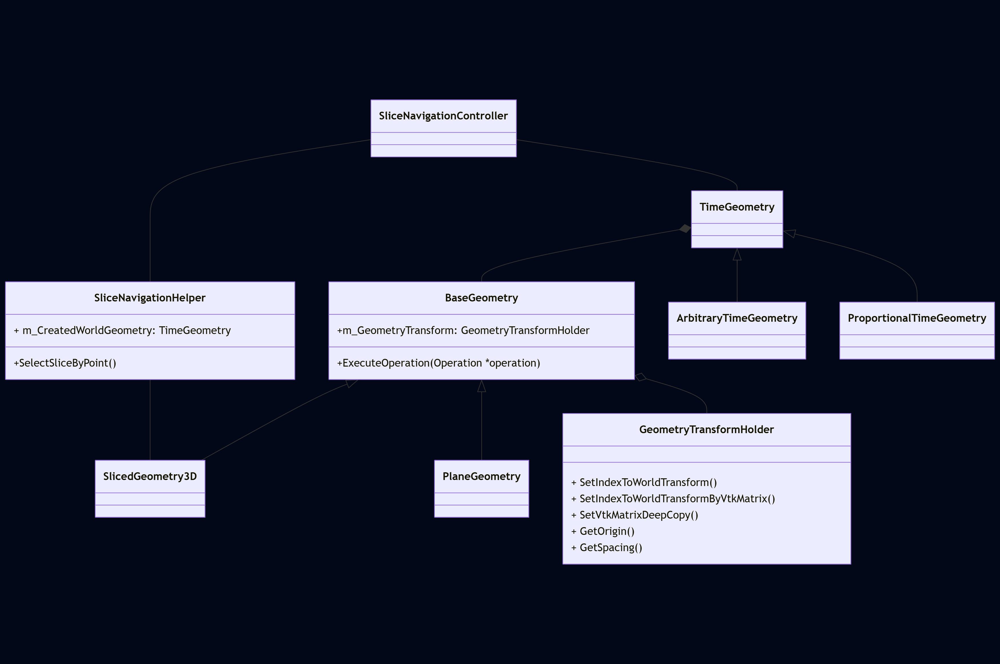
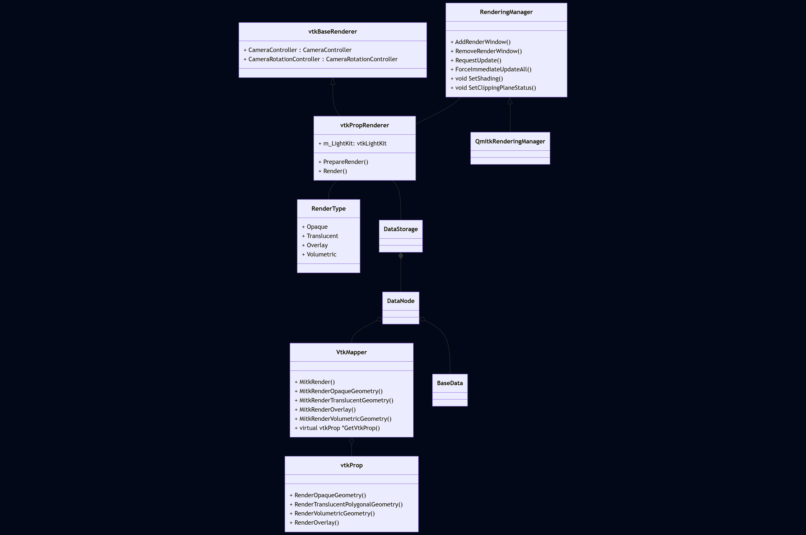

Mitk数据操作和渲染 一、数据操作 1. BaseRenderer mitk::BaseRenderer 是mitk的核心渲染组件，
mitk::BaseRenderer中还存储了当前窗口渲染数据时的几何信息，这些信息是后续做数据操作的重要依据，包括缩放、旋转和平移。
1 2 3 itkGetConstObjectMacro (WorldTimeGeometry, TimeGeometry);itkGetConstObjectMacro (CurrentWorldGeometry, BaseGeometry);itkGetConstObjectMacro (CurrentWorldPlaneGeometry, PlaneGeometry);
几何信息包括WorldTimeGeometry、CurrentWorldGeometry、CurrentWorldPlaneGeometry

2. TimeGeometry
TimeGeometry中存在着两个重要概念：TimePoint和TimeStep ，其中TimePoint表示在实际扫描过程中从开始已经过去的时间，TimeStep表示在这些TimePoint中的位置。比如在CT扫描过程中每隔300ms扫描一次，那么TimePoint就会是[0, 300, 600 ,900, …]的时间序列，而TimeStep就是这个序列的索引，比如TimeStep=0时，TimePoint=0, TimeStep=1是TimePoint为300ms.
ArbitraryTimeGeometry和ProportionalTimeGeometry 则分别表示了扫描间隔不固定以及扫描间隔固定的两种TimeGeometry。
需要注意的是在扫描骨头时几乎是用不到这些概念的，因为骨头扫描是静态的无法变化的，多次扫描和单次扫描是相同的效果。对于一些重要的器官扫描比如心脏，是需要多次扫描通过动态信息确定一些疾病的
但是在MITK中为了处理多种数据，所以存在这种数据结构定义
3. BaseGeometry
BaseGeometry是TimeGeometry中每个TimeStep对应的一个数据结构，即在特定时间点的扫描数据的几何信息。
4. SliceNavigationController
SliceNavigationController是TimeGeometry和SlicedGeometry3D及其对应的子类的主要操作类，用于实际控制数据切片、PlaneGeometry的方向以及通知观察者数据变化信息
所有的Slice的平移、旋转、缩放都应该通过SliceNavigationController来进行完成，这些操作会通过SliceNavigationController来改变对应TimePoint的SlicedGeometry3D并且影响对应的PlaneGeometry。

所有的PlaneGeometry的旋转、平移、缩放都是通过BaseGeometry完成的，但是这个过程并不是直接的，而是BaseGeometry将变换矩阵存储到了自身的变量m_GeometryTransform中，也就是所有的平面变换信息都会在m_GeometryTransform中进行处理，并在后续的过程中给出一致性的状态信息，例如spacing、offset、transform等等。如果不通过上述方式而旋转手动设置PlaneGeometry的Origin或者旋转PlaneGeometry会在下次动作时被SliceNavigationController自动修复
二、数据渲染 在Mitk中数据的渲染过程由mitk::RenderingManager、mitk渲染系统以及vtk的渲染系统组成

1. RenderingManager 在mitk中RenderingManager是整个渲染的入口，与vtk不同的是mitk会拦截所有的Qt鼠标事件，然后构建自己的交互系统而不是使用vtkInteractor去控制渲染过程，在MITK2022.10版本中RenderingManager已经变成了单例了，无法手动创建。当需要更新时需要用户手动调用RenderingManager的相关Update方法触发更新，更新分为RequestUpdate和ForceImmediateUpdateAll，RequestUpdate会产生请求更新事件，然后通过检查窗口是否有更新请求来决定更新哪些窗口，而ForceImmediateUpdate方法会立即更新指定窗口，所以尽量使用RequestUpdate方法。
1 2 3 4 5 6 7 8 9 10 11 12 13 14 15 16 17 18 19 20 21 22 23 24 25 26 27 28 29 30 31 32 33 34 35 36 37 38 39 40 41 42 43 44 45 46 47 48 49 50 51 52 53 54 55 56 57 58 59 60 61 62 63 64 65 void RenderingManager::RequestUpdate (vtkRenderWindow *renderWindow) { m_RenderWindowList[renderWindow] = RENDERING_REQUESTED; if (!m_UpdatePending) { m_UpdatePending = true ; this ->GenerateRenderingRequestEvent (); } } void QmitkRenderingManager::GenerateRenderingRequestEvent () QApplication::postEvent (this , new QmitkRenderingRequestEvent); } bool QmitkRenderingManager::event (QEvent *event) if (event->type () == (QEvent::Type)QmitkRenderingRequestEvent::RenderingRequest) { this ->ExecutePendingRequests (); return true ; } return false ; } void RenderingManager::ExecutePendingRequests () { m_UpdatePending = false ; RenderWindowList::const_iterator it; int i = 0 ; for (it = m_RenderWindowList.cbegin (); it != m_RenderWindowList.cend (); ++it, ++i) { if (it->second == RENDERING_REQUESTED) { this ->ForceImmediateUpdate (it->first); } } } void RenderingManager::ForceImmediateUpdate (vtkRenderWindow *renderWindow) { if (m_RenderWindowList.find (renderWindow) == m_RenderWindowList.cend ()) { return ; } m_RenderWindowList[renderWindow] = RENDERING_INACTIVE; m_UpdatePending = false ; int *size = renderWindow->GetSize (); if (0 != size[0 ] && 0 != size[1 ]) { auto *vPR = dynamic_cast <VtkPropRenderer *>(BaseRenderer::GetInstance (renderWindow)); if (vPR) vPR->PrepareRender (); renderWindow->Render (); } }
2. VtkPropRenderer VtkPropRenderer是用于承接用户设置，并将这些设置进行解析，然后将其设置到vtk的相关属性中的一个类。
首先VtkPropRenderer所做的事情就是解析在DataStorage中存储的所有DataNode中设置的属性，将其更新到对应的vtk渲染属性中，在mitk中用于解析属性设置并生成vtk渲染对象的类为VtkMapper的子类，VtkMapper的输出就是一个vtkProp对象也就是vtk渲染所需要的数据
1 2 3 4 5 6 7 8 9 10 11 12 13 14 15 16 17 18 19 20 21 22 23 24 25 26 27 28 29 30 31 32 33 34 35 36 37 38 39 40 41 42 43 44 45 46 47 48 49 50 51 52 53 54 55 56 57 58 59 60 61 62 63 64 65 66 67 68 69 70 71 72 73 74 75 76 77 78 79 80 81 82 83 84 85 86 87 88 89 90 91 92 93 94 95 96 97 98 99 100 101 102 103 104 105 106 107 108 109 110 111 112 113 114 115 116 117 118 119 120 121 122 123 124 125 126 127 128 129 130 int mitk::VtkPropRenderer::Render (mitk::VtkPropRenderer::RenderType type){ if (type == VtkPropRenderer::Opaque) { this ->PrepareMapperQueue (); this ->PropagateRenderInfoToMappers (); } for (auto it = m_MappersMap.cbegin (); it != m_MappersMap.cend (); it++) { Mapper *mapper = (*it).second; mapper->MitkRender (this , type); } ... return 1 ; } void mitk::VtkPropRenderer::PrepareMapperQueue (){ if (m_LastUpdateTime < GetMTime () || m_LastUpdateTime < this ->GetCurrentWorldPlaneGeometry ()->GetMTime ()) { Update (); } else if (m_MapperID >= 1 && m_MapperID < 6 ) Update (); DataStorage::SetOfObjects::ConstPointer allObjects = m_DataStorage->GetAll (); for (DataStorage::SetOfObjects::ConstIterator it = allObjects->Begin (); it != allObjects->End (); ++it) { const DataNode::Pointer node = it->Value (); if (node.IsNull ()) continue ; const mitk::Mapper::Pointer mapper = node->GetMapper (m_MapperID); bool visible = true ; node->GetVisibility (visible, this , "visible" ); int layer = 1 ; node->GetIntProperty ("layer" , layer, this ); int nr = (layer << 16 ) + mapperNo; m_MappersMap.insert (std::pair <int , Mapper *>(nr, mapper)); mapperNo++; } } void mitk::VtkPropRenderer::Update (mitk::DataNode *datatreenode){ if (datatreenode != nullptr ) { mitk::Mapper::Pointer mapper = datatreenode->GetMapper (m_MapperID); if (mapper.IsNotNull ()) { if (GetCurrentWorldPlaneGeometry ()->IsValid ()) { mapper->Update (this ); { auto *vtkmapper = dynamic_cast <VtkMapper *>(mapper.GetPointer ()); if (vtkmapper != nullptr ) { vtkmapper->UpdateVtkTransform (this ); } } } } } } void mitk::VtkPropRenderer::PropagateRenderInfoToMappers (){ if (m_VtkRenderInfo == nullptr ) return ; for (const auto &mapEntry : m_MappersMap) { auto vtkMapper = dynamic_cast <mitk::VtkMapper*>(mapEntry.second); if (nullptr != vtkMapper) { auto prop = vtkMapper->GetVtkProp (this ); if (nullptr != prop) prop->SetPropertyKeys (m_VtkRenderInfo); } } } void mitk::VtkMapper::MitkRender (mitk::BaseRenderer *renderer, mitk::VtkPropRenderer::RenderType type){ switch (type) { case mitk::VtkPropRenderer::Opaque: this ->MitkRenderOpaqueGeometry (renderer); break ; case mitk::VtkPropRenderer::Translucent: this ->MitkRenderTranslucentGeometry (renderer); break ; case mitk::VtkPropRenderer::Overlay: this ->MitkRenderOverlay (renderer); break ; case mitk::VtkPropRenderer::Volumetric: this ->MitkRenderVolumetricGeometry (renderer); break ; } } void mitk::VtkMapper::MitkRenderOpaqueGeometry (BaseRenderer *renderer){ bool visible = true ; GetDataNode ()->GetVisibility (visible, renderer, "visible" ); if (!visible) return ; if (this ->GetVtkProp (renderer)->GetVisibility ()) { GetVtkProp (renderer)->RenderOpaqueGeometry (renderer->GetVtkRenderer ()); } }